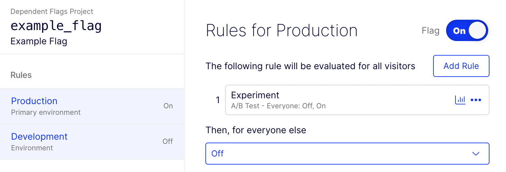

An interactive demo of flag dependencies for Optimizely Full Stack implemented in vanilla JS
A feature flag allows you to turn software functionality on or off and configure its behavior without deploying new code.
This is an example of a feature flag that uses a 50/50 A/B test rule to decide whether it is on or off.
Try changing the userId value to "user2" and then click the "Decide".
In the following example, dependent_flag depends on example_flag:
For documentation on how to specify flag dependencies, see this project's README.md
It is important to note that dependencies are evaluated statelessly in flag_dependencies.js.
When a decision is made for dependent_flag, its dependencies are satisfied if the specified
decision
would have been made for that user in that moment.
This means that a dependency may be satisfied even if the flag it depends on has not previously been decided/enabled for that user!
In the following example, try to find a userId value that satisfies flag_3's dependencies:
The full source code for this demo can be found on Github. The flag dependency implementation lives in flag_dependencies.js.
This demo is meant to be used as inspiration for your own implementation of flag dependencies. It has not been tested extensively and should not be run in any serious production environment. If you find a bug, please file an issue or (even better) create a pull request.
Built with gratitude using Skeleton, Alpine.js, and leader-line